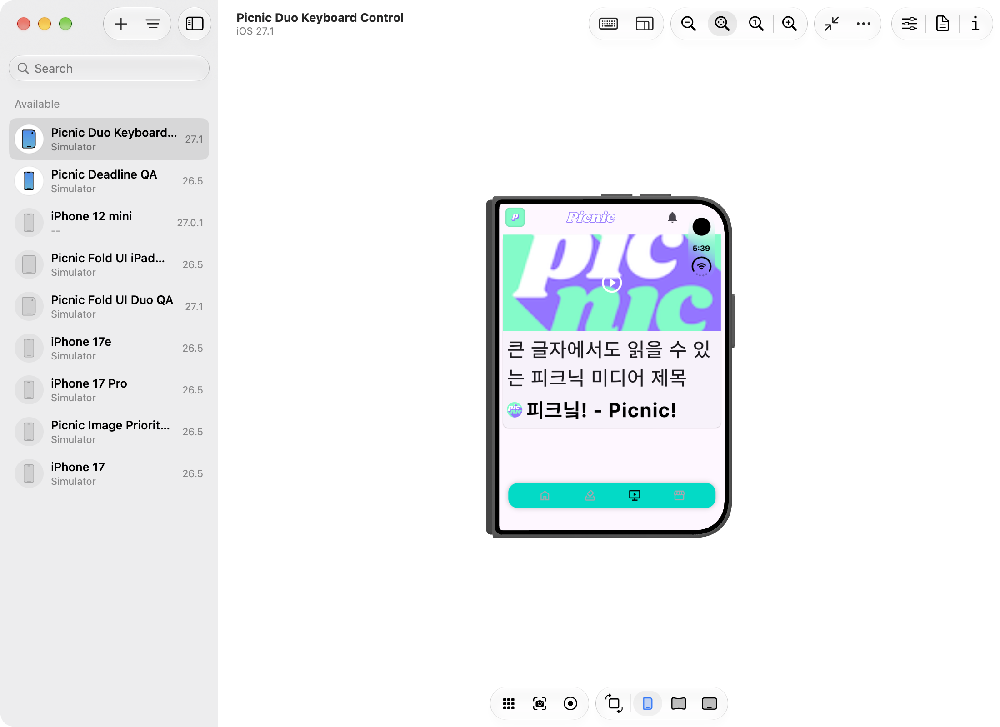
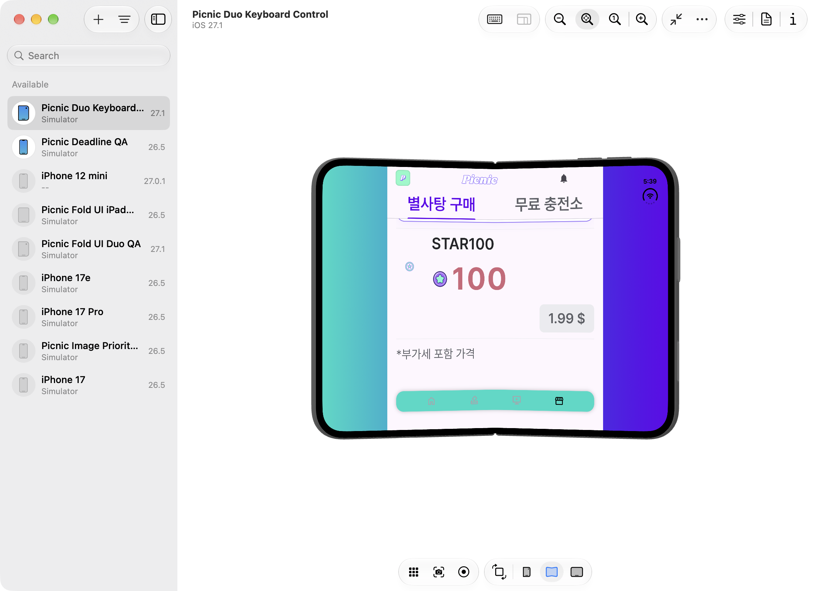
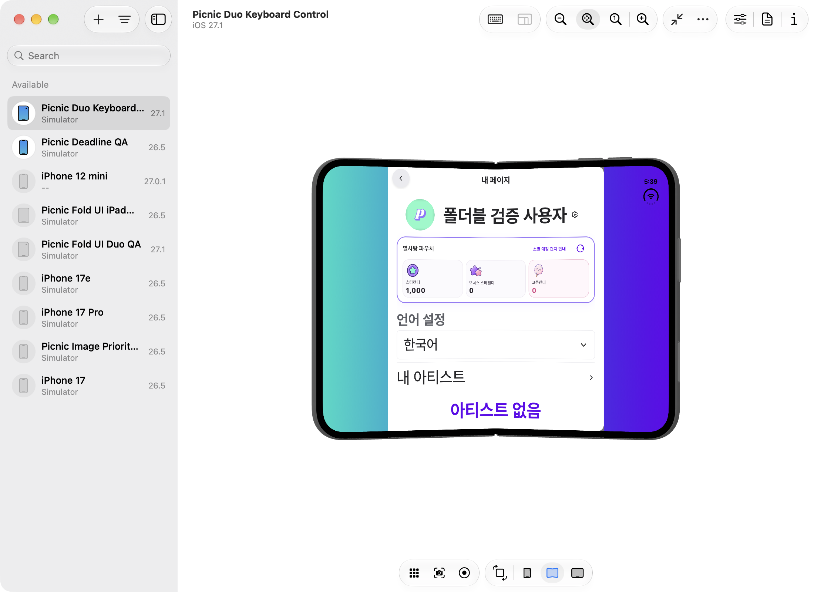
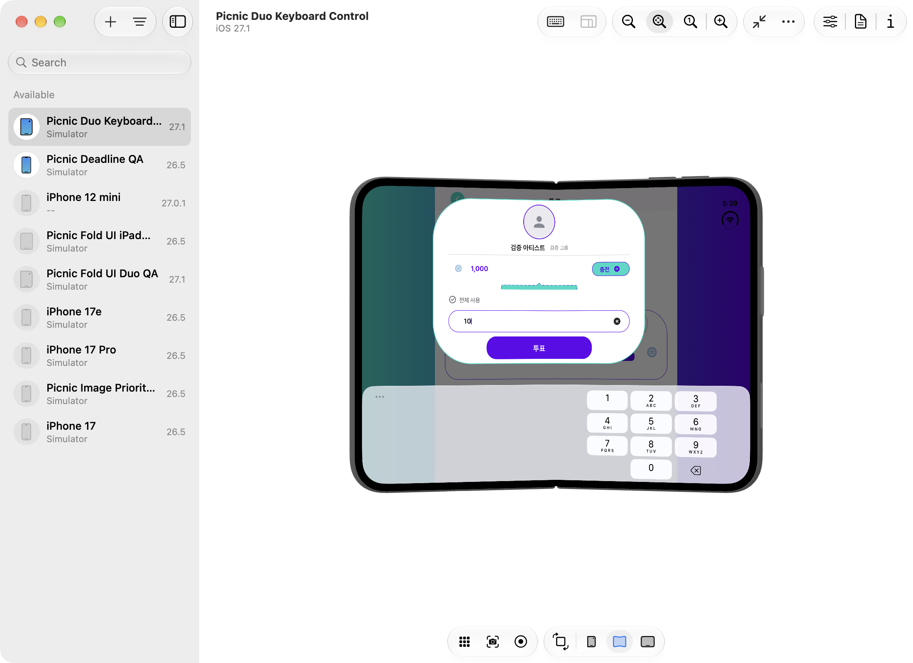
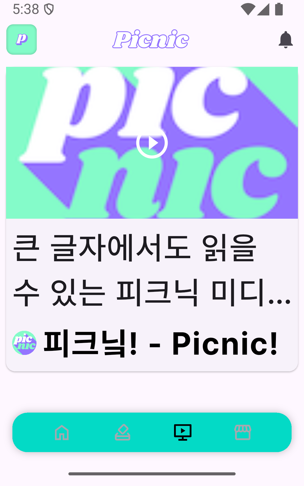
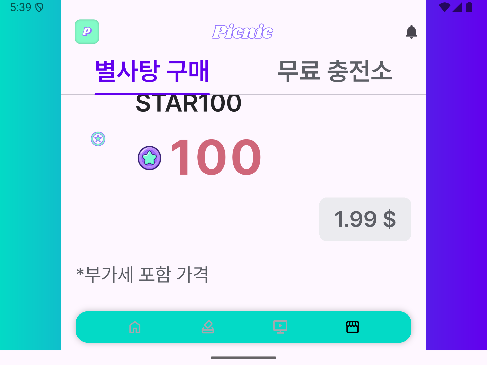
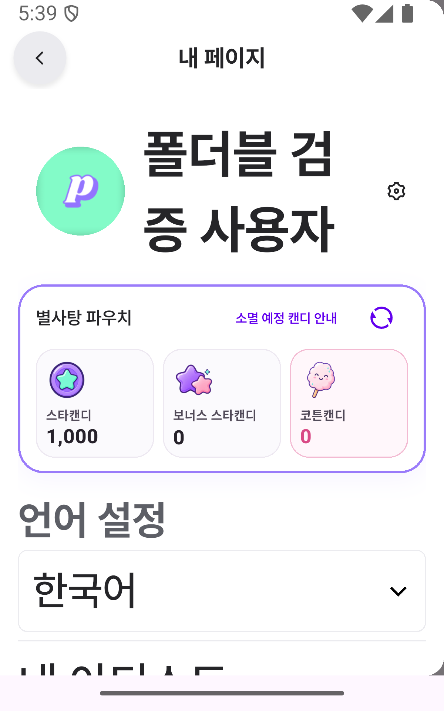
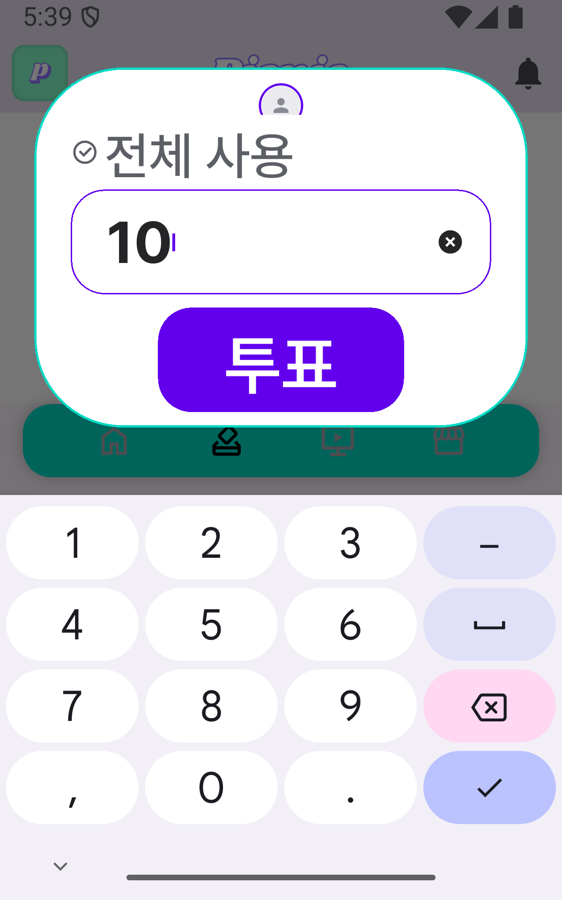

2026-10-29 · 기준 커밋 9c4c7b120 이후 변경 · docs/foldable-ui-audit
커뮤니티·댓글은 대상에서 제외했다. 실제 앱의 Portal, 하단 메뉴, 화면 이동 코드를 사용해 미디어·상점·마이페이지와 투표 목록→상세→입력창을 점검했다. 기존 한 열 구성을 유지했다.
320px 폭·글자 260%에서 미디어 채널명이 오른쪽으로 63px 넘치는 문제를 재현하고 수정했다. 채널명에 남은 가로 폭을 적용해 기존 말줄임이 작동한다. 짧은 채널명 오른쪽 빈 공간의 기존 탭 동작도 유지한다. 화면 이동 테스트 24개, 요청 감시 자체 검사 1개와 기존 관련 회귀 테스트 31개가 통과했다.
Duo 시뮬레이터와 Fold8 화면 비율의 Android 에뮬레이터에서 각각 2개 시나리오가 통과했다. 플랫폼별 접기·펼치기 6회와 실제 OS 키보드 표시·입력란 위치·닫기를 확인했다.
| 화면 | 확인한 동작 | 검증 경계 |
|---|---|---|
| 미디어 | 실제 하단 메뉴 진입, 목록 표시, 큰 글자, 접기 전환 후 같은 화면 인스턴스 유지 | 동영상·채널 외부 앱 재생은 실행하지 않음. 썸네일은 로컬 이미지로 대체 |
| 상점 | 메뉴 진입, 별사탕 구매 탭, 상품·잔액 표시, 가격 영역까지 스크롤, 전환 후 화면 인스턴스 유지 | 스토어 카탈로그는 빈 테스트 응답으로 가격 버튼 비활성 상태. 실제 결제·영수증·무료 충전소는 미검증 |
| 마이페이지 | 상단 프로필 탭으로 열기, 닉네임·잔액 표시, 열린 상태에서 접기 전환 후 인스턴스 유지, 닫기 | 테스트 로그인 상태. 계정 설정·내역·FAQ 등의 하위 화면 전체는 미검증 |
| 일반 투표 | 하단 투표 메뉴→목록 카드→상세→후보자 스크롤→입력창. 입력 처리 경로를 거친 값 10과 실제 OS 키보드 표시, 입력란 가림 여부, 배경 탭으로 닫기 | 로컬 PICNIC 투표 1건. 실제 투표 제출, 달성·제휴 등 다른 투표 유형은 미검증 |
| 홈·안내 팝업 | 홈은 실제 메뉴 이동의 시작점. 기존 홈·팝업 전환 검증은 이전 보고서 참조 | 이번 24개에 이전 위젯 직접 실행 결과를 중복 합산하지 않음 |
| 검사 | 조건 | 결과 |
|---|---|---|
| 화면 이동 행렬 | 미디어·상점·마이페이지: 466×678, 951×669, 400×640, 800×600, 320×600, 600×400 × 글자 1·2.6 | 12개 통과 |
| 투표 전체 이동 | 466×678, 951×669, 400×640, 800×600, 320×600, 600×400 × 글자 1·2.6. 키보드 inset 160·300 추가 | 12개 통과 |
| 요청 감시 자체 검사 | pic-voting-v2, voting-v2, verify_receipt 경로를 넣으면 감시 조건이 실패하는지 확인 | 1개 통과 |
| 기존 회귀 | store_page_test, my_page_render_test, vote_detail_page_tap_test, vote_media_list_page_test | 31개 통과 |
| 정적 분석 | 수정한 미디어 위젯과 테스트 3개 파일 | 문제 없음 |
| Duo | 전용 iOS 27.1 시뮬레이터. DeviceHub에서 466×678↔951×669 실제 전환 | 2개 시나리오 통과. 6회 전환. 실제 키보드 높이 220·265 |
| Fold8 비율 | 전용 Generic foldable API 35. OPENED 상태에서 400×640↔800×600 창 크기 전환 | 2개 시나리오 통과. 6회 전환. 실제 키보드 높이 276·288 |
각 네이티브 시나리오는 미디어·상점·마이페이지의 600px 폭 경계 전환을 강제한다. 전환을 하지 않으면 실패한다. 이어서 실제 투표 이동과 키보드를 검사한다. 글자 1과 2.6의 두 시나리오를 실행한다. 글자 배율은 테스트에서 적용한 선형 배율이다.
서버·인증·지갑·상품 응답은 로컬 테스트 데이터다. 앱 시작의 Firebase·OAuth 절차는 실행하지 않는다. 네이티브 HTTP는 지정한 이미지 호스트 두 곳의 GET만 루프백 이미지 서버로 연결한다. 그 외 요청은 기록하고 거부하며 테스트를 실패시킨다. Supabase 요청 기록에서 투표·구매·영수증 함수 호출이 없는지도 확인한다. 구매 서비스는 테스트 대체 구현이다. UI 배치 검증이며 운영 데이터·실결제 성공의 증거가 아니다.
video_list_item.dart의 채널명 Text는 Row 안에서 가로 제약이 없었다. 320×600·글자 2.6에서 63px 오버플로가 발생했다. Text를 Flexible로 감싸 채널 아바타·간격을 제외한 폭을 사용한다. 글자 배율이나 앱의 최대 콘텐츠 폭은 바꾸지 않았다.
시험 작성 중 발견한 두 가지 하네스 문제도 분리했다. 스크롤 직후에는 프레임을 진행해야 hit test가 갱신된다. 큰 글자로 화면 밖에 있는 후보자는 실제 스크롤로 생성한 뒤 선택해야 한다. 또한 짧은 창에서 키보드가 올라오면 기존 투표 UI는 닫기 버튼을 숨기고 배경 탭으로 나갈 수 있다. 최종 네이티브 시험은 이 경로와 키보드가 내려가는 결과를 확인한다.
이미지 8개는 별도 PNG다. HTML에 이미지를 내장하지 않아 Orca에서 가볍게 열 수 있다. 각 화면은 접힌 항목으로 제공하며 이미지에는 지연 로딩을 적용했다. 이미지·상품 ID·잔액은 테스트 데이터이며 실제 서비스 콘텐츠가 아니다.








구현과 다른 공급자인 Claude Opus 5.5/high가 읽기 전용으로 검토했다. 좁고 낮은 창의 키보드 테스트, 채널명 옆 빈 공간의 탭 동작, 테스트 요청 감시 조건의 3개 지적을 수정했다. 같은 모델·사고 수준의 새 제한 세션에서 1회 재검토했고, 지적 3개의 해결을 확인했다. 리뷰어 완료 이후 조정자가 최종 테스트 25개 통과를 확인했다.
Orca Run run_e8de96196f7d · 최초 검토 ctx_0d95529630a5 · 재검토 ctx_dcc0d3509e70. 초기 기존 코드 조사 작업은 연결 권한 검증 실패로 중단했으며 완료로 계산하지 않는다.
네이티브 최종 실행 이후 테스트 종료 시 검사하는 정규식에서 voting 경로도 감지하도록 보완하고, 별도 자체 검사를 추가했다. UI 코드와 네이티브 입력 경로는 그 후 변경하지 않았다.
Duo·Fold8 실기기의 OS·힌지·분할 화면·회전 조합, 운영 데이터, 실제 로그인·구매·광고·투표 제출은 별도 QA다. 이번에는 상점 무료 충전소, 마이페이지 하위 화면 전체, 다른 투표 유형·언어 전체를 검증하지 않았다. Firebase 업그레이드의 종료 상태 알림 탭 항목도 그대로 남는다. 배포는 수행하지 않았다.
# picnic_app 폴더 flutter test test/current_service_foldable_test.dart --no-pub flutter test integration_test/device/current_service_foldable_device_test.dart \ -d <전용 기기 ID> --dart-define=VERIFY_FOLD_TRANSITION=true --no-pub flutter analyze --no-pub test/current_service_foldable_test.dart \ test/helpers/current_service_test_app.dart \ integration_test/device/current_service_foldable_device_test.dart
네이티브 로그의 SERVICE_UI RESIZE마다 커버와 펼침 창을 바꾼다. SERVICE_UI CAPTURE에서 화면을 기록한다. Android 비율 시험은 OPENED 상태를 유지하고 밀도 480에서 wm size 1200x1920과 wm size 2400x1800을 번갈아 적용한다. 이 값은 시험용 논리 크기이며 Fold8 실기기 사양을 뜻하지 않는다.